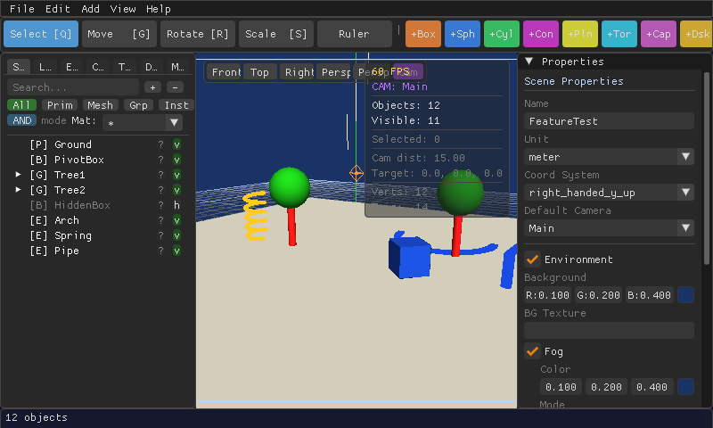

Shapes & Tools
Every primitive shape, how selection works, and how to group, duplicate, and extrude.
Primitive shapes
Every scene is built from these. Add them from the toolbar's quick-add buttons or the Add menu.
| Shape | Shortcut | Good for |
|---|---|---|
| Box | F1 | Walls, crates, buildings, blocky anything |
| Sphere | F2 | Balls, heads, planets, rounded caps |
| Cylinder | F3 | Pillars, wheels, trunks, pipes |
| Cone | F4 | Roofs, trees, spikes, funnels |
| Plane | F5 | Floors, walls, flat panels |
| Torus | Add menu | Rings, donuts, tubes that loop |
| Capsule | Add menu | Rounded columns, simple limbs |
| Disk | Add menu | Flat circles, coins, wheels (2D) |
| Grid | Add menu | Reference/measuring grids |
| Ico-sphere | Add menu | A more evenly-faceted sphere |
Every shape stays fully editable after you place it — resize, reshape, and re-color it any time from the Properties panel, with nothing "baked in".
Selecting objects
- Click an object in the viewport (or its name in the Scene panel) to select it.
- Ctrl+click to add another object to the selection.
- With the Select tool active, click-drag across empty viewport space to draw a box and select everything inside it (hold Ctrl to add the box's contents to your current selection instead of replacing it).
- Press Ctrl+A to select everything (or every child, if you're inside a group).
- Press P to jump to the selected object's parent.
When multiple objects are selected, the Properties panel shows shared fields for all of them — edit once, apply to every selected object.
Grouping & organizing
- Ctrl+G — group the selected objects so they move, rotate, and scale together.
- Ctrl+Shift+G — ungroup.
- Drag objects onto one another in the Scene panel to reparent them.
- Ctrl+Up / Ctrl+Down — reorder an object among its siblings.
Definitions & instances — build once, place many times
If you need the same object in several places — a tree, a chair, a fence post — convert it into a Definition (see the Defs tab), then place Instances of it around your scene. Each instance can have its own position and even its own material override, but editing the original definition updates every instance at once.
Extrude — sweep a 2D shape into 3D
Extrude takes a flat cross-section (rectangle, circle, polygon, or a custom outline) and sweeps it along a path (a straight line, an arc, a helix, a polyline, or a smooth curve). It's how you build things a basic primitive can't: railings, pipes, coils, custom mouldings.

Add one from Add → Extrude, then set its path type, cross-section, and dimensions in the Properties panel.
Other tools worth knowing
| Tool | Shortcut | What it does |
|---|---|---|
| Measurement | M | Click two points to see the distance between them. |
| Command Palette | Ctrl+P | Search for any object or command by name. |
| Wireframe overlay | Alt+W | See through solid shapes to check alignment. |
| Bounding box display | B | Show the box around selected objects. |